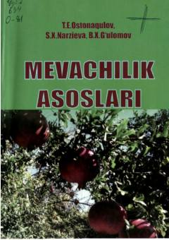

MAMevachilik sohasining nazariy va amaliy asoslarini o'rgatuvchi o'quv qo'llanma.
Ushbu o'quv qo'llanma qishloq xo'jaligi yo'nalishidagi talabalar uchun mo'ljallangan bo'lib, meva va rezavor meva ekinlarining biologik xususiyatlari, ularni ko'paytirish, bog'lar barpo etish va parvarishlash texnologiyalarini qamrab oladi. Kitobda intensiv mevachilik, hosilni yig'ib olish va saqlash hamda O'zbekiston sharoitida meva yetishtirishning nazariy va amaliy asoslari batafsil yoritilgan.